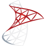

BI
Power BI Development
Build and improve dashboards, KPI scorecards, data models, DAX measures, and Power Query workflows.
I build Power BI dashboards and support the reporting, data, and day-to-day operations behind them. I can also take on broader virtual assistant and invoice capture work to fit your team’s needs.
Remote support for business owners and teams.
I build dashboards and reporting solutions, and I can take on the operations and data work that helps keep your business moving.
Build and improve dashboards, KPI scorecards, data models, DAX measures, and Power Query workflows.
Flexible virtual or executive assistant support across admin, coordination, reporting, data handling, and recurring business processes. We can shape the scope around your workflow.
Prepare recurring reports, update scorecards, analyze data, and organize information for clear day-to-day decisions.
Enter invoice details, keep records organized, and support routine invoice processing tasks.
Select a report to browse its pages. Open any page to view it larger.
Review sales, product costs, gross profit, and units across time, resellers, countries, and customer details.
Sales trends · Gross profit · Resellers · Countries
A closer look at the tasks I can support with each.

We agree what needs handling and when. I keep the work organized and share updates as I go.
Agree the tasks, deadlines, tools, and what a finished handoff should include.
Process invoices, update records, organize documents, or prepare data for reporting.
Update trackers and reports, and flag missing information or blockers.
Share completed work, status, and any next steps with you.
Work across invoice capture, audit operations, productivity, and business reporting.
My SAP Analytics Cloud certification and selected professional training.
Issued May 21, 2025 · Expires April 17, 2027
View verified credential on Credly ↗Issued June 2026
View on LinkedIn ↗My experience combines invoice capture and data entry with operational reporting, dashboards, and process tracking. I’ve supported reporting on productivity, audit activity, customer satisfaction, and lost hours.
I can help take recurring admin and data tasks off your list, keep information organized, and report back on what’s done.
Tell me what you’re working on, what you’d like to hand off or improve, and how often you need support. We can shape the scope around your needs.